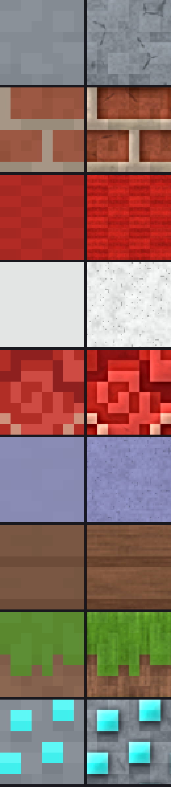
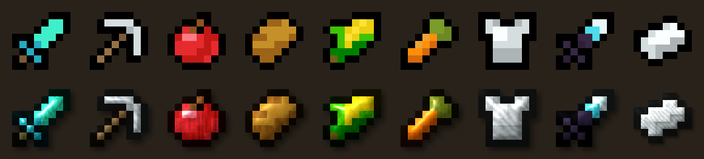
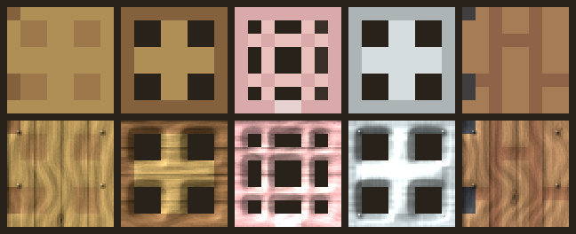
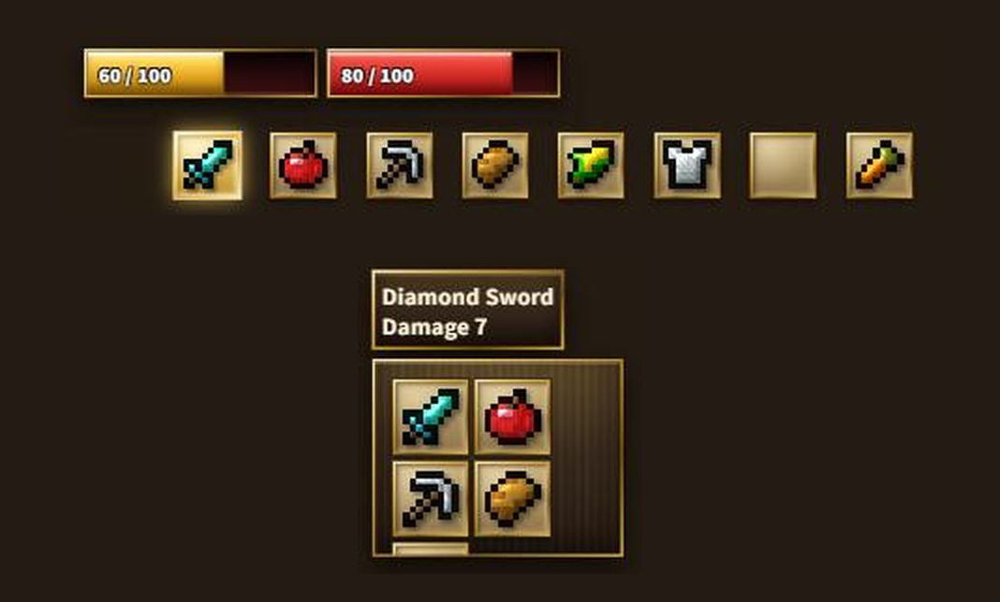
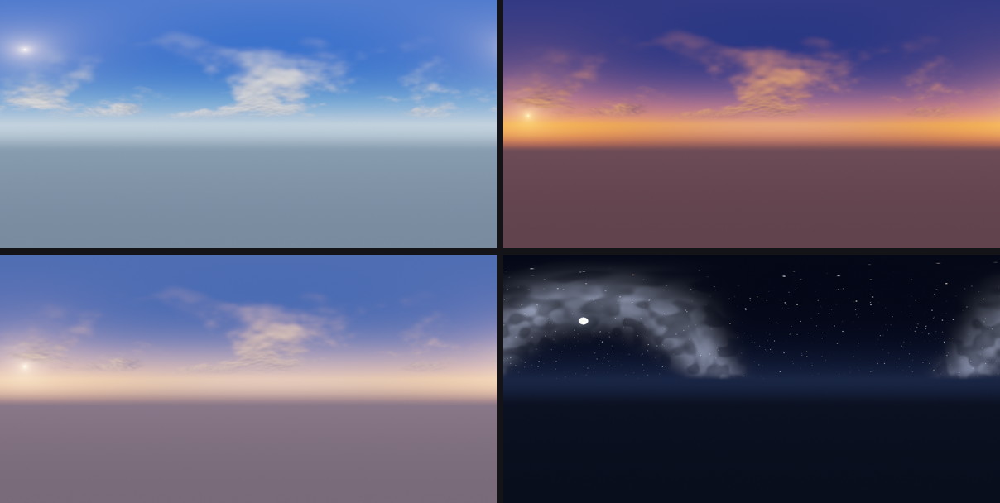

ダウンロードDownload
シェーダーとテクスチャは、別々です。重いと感じたら、軽量版を使ってください。 The shader and the textures are separate. If it feels heavy, use the Lite versions.
Golden Hour Shader
本編。凹凸・影・光の色・水・落ち葉・雪・水の波紋・金属の質感など、全部入り。The full version: relief, shadows, coloured light, water, falling leaves, snow, water ripples, metal sheen — everything.
GoldenHour-Shader.zip 約 15 KB~15 KB · – 回downloadsGolden Hour Shader Lite
落ち葉・雪・波紋・凹凸・光の筋・雲の影などを切って、負荷を下げた版。色・光・影・水の見た目は残っています。Lighter on the GPU: falling leaves, snow, ripples, relief, light shafts and cloud shadows are switched off. Colours, light, shadows and water stay.
GoldenHour-Shader-Lite.zip 約 15 KB~15 KB · – 回downloadsGolden Hour Textures 64
ブロック・アイテム・防具・mob・ドア・空・UI まで、全部入り。ブロックは 64×64。Blocks, items, armour, mobs, doors, sky and UI — all in one. Blocks are 64×64.
GoldenHour-Textures-64-All.zip 約 41 MB~41 MB · – 回downloadsGolden Hour Textures Lite
ブロック 32×32・アイコン 40×40・皮 128 の軽い版。ファイルは約半分、ブロックのメモリ使用は 1/4。Blocks 32×32, icons 40×40, skins 128. About half the file size and a quarter of the block memory.
GoldenHour-Textures-Lite.zip 約 18 MB~18 MB · – 回downloadsすべてのファイル:All files: Releases
見た目Preview
左 / 上 = 元の Bloxd、右 / 下 = Golden Hour。Left / top = original Bloxd, right / bottom = Golden Hour.





入れ方Install
シェーダーShader
- WebGPU が使える Chrome 系ブラウザで、bloxd.io を開く。
- 設定 → Shader Pack を開く。
- ダウンロードした zip を、そのまま、ドロップする(解凍しない)。
- 案内に従って、ページを再読み込みする。
- Open bloxd.io in a Chromium-based browser with WebGPU.
- Open Settings → Shader Pack.
- Drop the downloaded zip as it is (do not unzip it).
- Follow the prompt and reload the page.
テクスチャTextures
- zip を解凍する(
GoldenHour-Textures-64-Allのようなフォルダができる)。 - bloxd.io の設定 → テクスチャパック を開く。
- フォルダごと(中の
texturesではなく、その 1 つ上のフォルダ)を、ドロップする。 - 再読み込みする。元に戻すときは、設定で、標準(Default 2)を選ぶ。
- Unzip the file (you get a folder like
GoldenHour-Textures-64-All). - Open bloxd.io Settings → Texture Pack.
- Drop the whole folder (not the
texturesfolder inside it, but the folder one level above). - Reload. To go back, choose the default pack (Default 2) in the settings.
本編と軽量版は、どちらか 1 つだけ入れてください(シェーダーも、テクスチャも)。Use only one of the full and Lite versions (for both the shader and the textures).
できること・できないことNotes & limits
| 項目 | 内容 |
|---|---|
| シェーダーが効くゲーム | シェーダーパックを許可しているゲームだけ。許可していないゲーム(多くの標準ゲーム)では、凹凸・影・光の色・水・落ち葉・雪は効きますが、葉と草の「ゆれ」と、葉の黒い部分の透明化は効きません(ゲーム側の制限)。 |
| 空 | ゲームが標準の「画像の空」を使うときだけ。昼夜サイクルのあるゲームなど、プログラムで描く空を使うゲームでは、ゲーム自身の空のままです。 |
| UI(金の縁など) | ゲームがテクスチャパックの CSS を取り込む仕組みの中で作っています。ゲームの更新で名前が変わると、効かなくなる部分が出ます。ボタンにマウスを乗せたときの色など、変えられない青が少し残ります。 |
| 顔の画像 | ワールド参加時のロード画面の顔(円形に切り抜き)と、ロゴの顔を差し替えています。他のプレイヤーのアバターは、変えていません。 |
| 軽量版 | 見た目は少し簡素になります。速さの差は、環境によります。 |
| 手に持つアイテム | アイコンの絵を、そのまま、モデルに貼っています。形が絵と合わない約 80 個(風船・ペイントボールの銃など)は、模様つきの色のままです。 |
| Item | Details |
|---|---|
| Where the shader works | Only in games that allow shader packs. In games that do not (most standard games), relief, shadows, coloured light, water, falling leaves and snow still work, but leaf/grass swaying and cut-out transparency of leaves do not (a game-side limit). |
| Sky | Only when the game uses the standard image-based sky. Games with a procedural sky (for example day/night cycles) keep their own sky. |
| UI (gold trim etc.) | Built within the limits of how the game imports texture-pack CSS. A game update that renames classes may break parts of it. A little blue remains where it cannot be changed (for example button hover colours). |
| Face image | Replaces the face on the world-join loading screen (cut out as a circle) and in the logo. Other players' avatars are unchanged. |
| Lite versions | Slightly simpler looks. The speed difference depends on your setup. |
| Held items | The icon art is mapped onto the models. About 80 models whose shape does not match their icon (balloons, paintball guns and so on) keep the patterned flat colours instead. |
よくある質問FAQ
読み込めない・重いIt will not load / it is heavy
テクスチャは、軽量版を試してください。シェーダーが動かないときは、WebGPU が使えるブラウザか確認してください(検証に通らないと、行番号つきのエラーが出ます)。Try the Lite textures. If the shader does not run, check that your browser supports WebGPU (a validation failure shows an error with a line number).
元に戻したいHow do I go back?
テクスチャは、設定で標準(Default 2)に戻します。シェーダーは、Shader Pack の画面で外します。For textures, choose the default pack (Default 2) in the settings. For the shader, remove it on the Shader Pack screen.
色や強さを変えたいCan I tweak colours and strength?
シェーダーの golden_hour.wgsl の先頭に、調整用の値(立体感・光と色・質感・水など)があります。リポジトリのソースを、編集して、zip にして入れ直してください。The top of golden_hour.wgsl has tunable values (relief, light and colour, materials, water and so on). Edit the source from the repository, zip it and load it again.
Bloxd の公式のものですか?Is this official?
いいえ。非公式のファンメイドです。Bloxd.io とは関係ありません。下の注意を読んでください。No. It is unofficial and fan-made, and not affiliated with Bloxd.io. Please read the notice below.